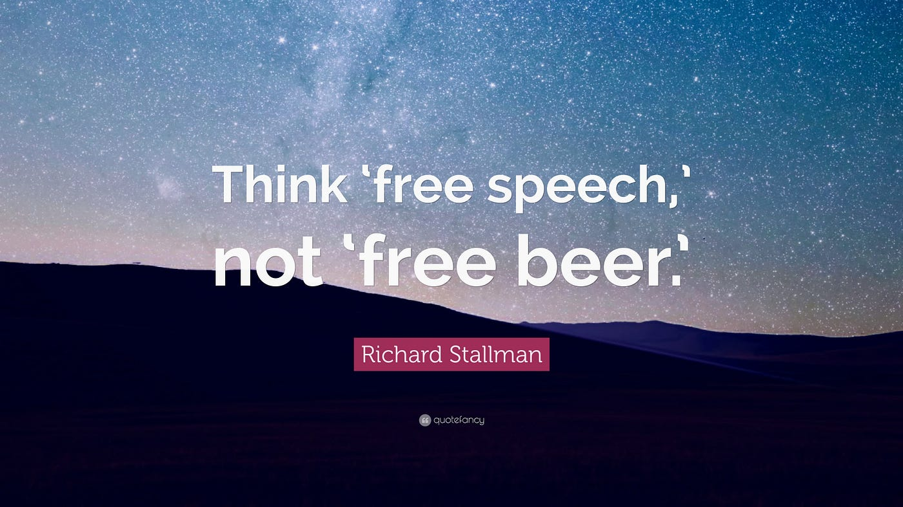
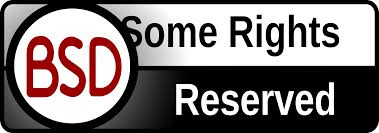
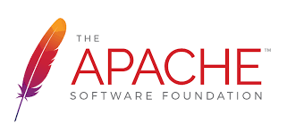

Open Source Philosophy & Licenses
Module 1 - GIST 604B
Why Licenses Matter for GIS Professionals
What is "Open Source"?
📖 Definition:
Source code that is:
- Available
- Modifiable
- Redistributable
💡 "Free as in FREEDOM, not free as in beer"
(libre, not gratis)

The Four Essential Freedoms
- 🎯 USE the software for any purpose
- 🔍 STUDY how it works and modify it
- 📤 REDISTRIBUTE copies to help others
- 🔄 DISTRIBUTE modified versions
(so the community benefits)
Open Source Powers GIS
- 🗺️ QGIS
Professional desktop GIS - zero license fees
- 🗄️ PostGIS
Enterprise spatial databases at scale
- 🐧 Linux
Powers web servers, Android, supercomputers
- 📊 GDAL
Foundation of ALL geospatial software
Why This Matters for GIS Professionals
- ✅ Accessibility
No fees → Students, NGOs, developing nations
- ✅ Transparency
Audit algorithms, understand methods
- ✅ Customization
Modify tools for specific workflows
- ✅ Career Development
Public portfolio, real contributions
- ✅ Industry Reality
NASA, Google, Planet all use open source
The Problem Without Licenses
- ❌ Unclear what users can legally do
- ❌ Code might be "stolen" and closed
- ❌ No protection for contributors
- ❌ Legal uncertainty prevents adoption
- ❌ Collaboration becomes impossible
⚠️ Without a license = All Rights Reserved
"All Rights Reserved" = Default copyright
Nobody can use, modify, or distribute (even if public!)
Licenses Are ENABLERS, Not Barriers
- ✓ Clarity - Explicit permissions & obligations
- ✓ Protection - For creators AND users
- ✓ Trust - Known rules for collaboration
- ✓ Compatibility - What can be combined
- ✓ Legal Standing - Foundation if needed
💡 Think: "Rules of the road" for collaboration
The License Spectrum
Public Domain ← Permissive ← Weak Copyleft ← Strong Copyleft
(CC0) (MIT, BSD) (LGPL, MPL) (GPL, AGPL)
Most Permissive ←──────────────────────────→ Most Protective
💡 Copyleft = "Share-alike" requirement
If you distribute modified versions, you must share them under the same license
All allow commercial use!
Differ in sharing requirements for modifications
Permissive Licenses: MIT, BSD, Apache
- ✅ Minimal restrictions
- ✅ Can be used in proprietary software
- ✅ Main requirement: Attribution (give credit)
- ✅ Maximum adoption strategy
Examples:
- Leaflet (web mapping) - BSD
- pandas (data analysis) - BSD
- React (Facebook) - MIT
💼 Companies love these: Low friction


Copyleft Licenses: GPL, AGPL
- ✅ "Share-alike" philosophy
- ✅ Derivatives must remain open
- ✅ Protects user freedoms forever
- ✅ Community protection strategy
Examples:
- QGIS - GPL v2
- PostGIS - GPL v2
- Linux kernel - GPL v2
💡 Commercial use allowed!
Restriction: Must share modifications if distributed
Case Study: QGIS - GPL v2
Why GPL?
- Ensures QGIS stays open forever
- All plugins must be GPL-compatible
- Community investment protected
Can you...
- ✅ Use commercially? YES
- ✅ Charge for QGIS? YES
- ✅ Modify it? YES
- ⚠️ Distribute modifications? Must share source
Strategy: Protect the commons
Case Study: Leaflet - BSD 2-Clause
Why BSD?
- Maximize adoption everywhere
- Minimal barriers for companies
- Enable proprietary products built on top
Used by:
- Mapbox (commercial)
- CARTO (commercial)
- Facebook, GitHub, NPR
Strategy: Ubiquity through simplicity
Case Study: GDAL - MIT/X License
Why MIT?
- Be the universal foundation
- Used by everyone, everywhere
- Broad integration across sectors
Users include:
- NASA, Google, Planet Labs
- Esri (proprietary GIS)
- Open source projects
- Academic institutions
Strategy: Universal infrastructure
What This Means for YOU
As a User:
- ✓ Can I use commercially? (Usually YES!)
- ✓ Do I need attribution? (Check license)
- ✓ Can I modify? (YES, but sharing rules vary)
As a Contributor:
- ✓ What license for my project? (Choose strategically)
- ✓ Can I contribute to GPL projects? (YES, if you agree)
As a Professional:
- ✓ License compliance matters in industry
- ✓ Understanding = Informed tool selection
- ✓ Professional competence signal
💼 This is a career-relevant skill
Common Misconceptions - BUSTED
- ❌ "Open source = no commercial use"
✅ Most licenses explicitly ALLOW commercial use
- ❌ "GPL = can't charge money"
✅ GPL allows selling—just share modifications
- ❌ "MIT = public domain"
✅ MIT requires attribution (not public domain)
- ❌ "All open source licenses are the same"
✅ Significant differences in requirements
💡 Read the license—don't assume!
Essential License Resources
- 🔗 choosealicense.com
Plain English summaries
- 🔗 tldrlegal.com
Software licenses explained simply
- 🔗 opensource.org/licenses
OSI-approved licenses
- 🔗 GitHub license picker
Built into repository creation
📚 Bookmark these now!
📊 Quick Poll: Your Open Source Experience
✏️ Poll 2: Open Source Software Experience
Question: How comfortable are you with open source software in general?
🆕 Brand new → 🔍 Aware but rarely use → 📚 Use some tools → 💼 Regular use → ⭐ Active contributor
Next: M1A1 - Open Source License Analysis
What you'll do:
- 📋 Compare MIT, GPL, Apache, BSD licenses
- 🎯 Analyze realistic GIS scenarios
- 💡 Make informed license decisions
- 📝 Create structured analysis document
Time: 1.5-2 hours
Points: 8 points
Format: Practical scenarios, not abstract legal theory
Ready to apply this knowledge!
Key Takeaways
- ✓ Open source = Freedom, not just free price
- ✓ Licenses ENABLE collaboration through clarity
- ✓ Permissive vs Copyleft = Different strategies
- ✓ All major licenses allow commercial use
- ✓ License literacy = Professional asset
🚀 The GIS industry runs on open source
Ready for M1A1? Let's go!